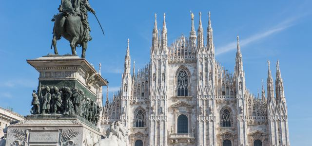
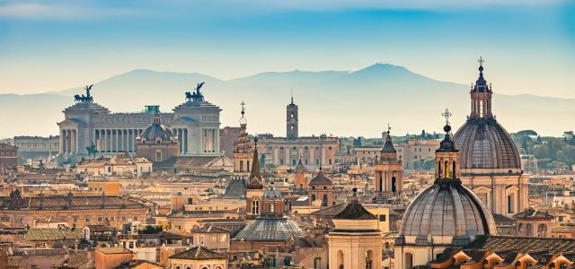
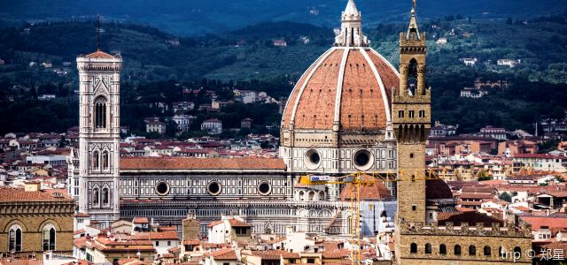

Europe: Italy
-
Milan is one of the world’s famous international metropolises. With regards to art and fashion, it has left a huge and indelible impression. The second largest city in Italy, Milan has a long and storied history. I have lived here for one year. I love this city!
-
Rome is Italy’s Capital city and, in classical antiquity, the center of the Roman Empire. Presently, Rome has become a large “open-air” history museum. Inside the city, many traces of ancient Rome have been preserved.
-
Florence was an artistic and cultural center of the Renaissance.